How to look after your team's accounts, fix common mistakes, and run the daily and weekly routines: sales imports,
reordering, deliveries, counts, waste, costs and the schedule. Read the Staff guide first; everything in it applies to you too.
1What you can do
Role
Can
Staff
Record sales, receive deliveries, count stock, log waste, view the menu (with allergens) and the schedule, change their own password.
Manager (you)
Everything staff can, plus: the Dashboard, menu and recipes, ingredients and suppliers, ordering, the schedule and employees,
sales imports, Excel, removing wrong waste entries, and staff accounts (add, reset passwords, disable).
Owner
Everything, plus manager and owner accounts, roles, business settings (name, target food cost) and backups.
2Helping your team with accounts
All account work happens on Settings → Users. You see your staff (and yourself); managers and owners are handled by the owner.
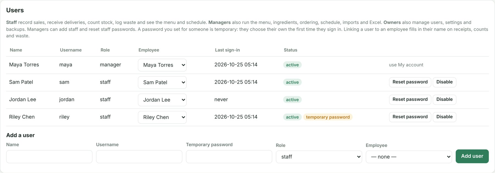
Riley still has the temporary password you set; the tag disappears once they choose their own.
Add a new team member
Under Add a user, type their name and a username (e.g. riley: letters, numbers, dots or dashes).
Type a temporary password (8+ characters).
Pick their Employee record so deliveries, counts and waste they log carry their name. (Add them on the Schedule tab first if they aren't there; see section 7.)
Tap Add user. Tell them their username and temporary password in person, and give them the Staff guide.
Someone forgot their password
Find them in the Users table and tap Reset password.
Type a new temporary password (8+ characters) and confirm.
Tell them the temporary password. They are signed out everywhere, and at their next sign-in the app makes them choose their own.
"Too many attempts"? After 5 wrong passwords that username is locked for 5 minutes from that device. A reset doesn't lift the wait.
Someone leaves
Tap Disable on their row. They are signed out at once and can't sign in. (Enable brings them back.)
On the Schedule, click their name and tap Remove from roster. Their upcoming shifts become open shifts; past shifts stay for labor history.
Good habits
One account per person, never shared. Never ask for someone's password; reset it instead. Disable accounts on someone's last day.
You can't reset your own password here: use My account, or ask the owner if you've forgotten it.
3Questions staff will ask you
They say
What to do
"I forgot my password" / "It says too many attempts"
Reset their password (section 2). If locked, they wait 5 minutes, then sign in with the temporary one.
"It says this needs a manager account"
That action is manager-only (e.g. editing the menu or creating orders). Do it for them, or explain the right way.
"Should I ring sales up here?"
Only if your shop doesn't import sales from the till. If you import (section 4), tell staff not to also record sales, or every drink is counted twice.
"I logged the wrong waste"
Counts & Waste → Waste log, tap Remove on that entry. The stock goes back. Then they log it correctly.
"I entered a sale or a delivery wrong"
Sales recorded by hand and delivery receipts can't be undone. Fix the stock: do a stock count of the affected items (section 6). Add a note.
"The delivery has items we didn't order"
Have them tick Wrong or extra items and describe it in the notes; call the supplier.
"Is this drink nut-free?"
Check the Contains line on the Menu. The app doesn't track shared blenders or cross-contact, so never promise "allergen-free".
"Can I swap shifts?"
Only managers change the schedule. Drag the shift to the new person (section 7).
4Every day
a. Open with the Dashboard
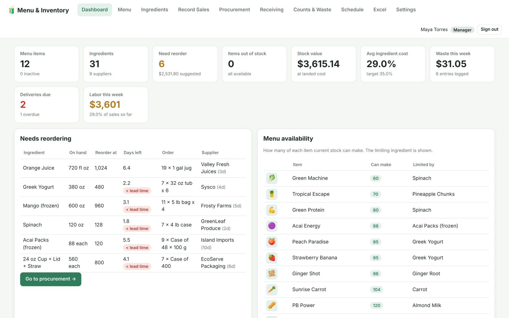
Top row: what needs reordering, anything out of stock, stock value, average food cost against target, waste this week, deliveries due and labor this week.
Need reorder and the Needs reordering table: a red < lead time tag means stock runs out before a new delivery could arrive. Order today.
Deliveries due: make sure someone checks them in on Receiving; chase anything overdue.
Menu availability: how many of each drink stock can make, and which ingredient limits it.
b. Import yesterday's sales from the till
In your till system, export the item sales report for yesterday as a CSV file (one row per item sold, with date and quantity).
Open Record Sales → Import sales from your till system and choose the file.
Check the column choices (Date, Item name and Quantity are required). They are usually right.
For each name with a red bar, pick the matching menu item, or Ignore for things that aren't drinks (gift cards, merch). The app remembers your choices.
Tap Import … drinks. If a file was imported before, you'll be warned before counting it twice.
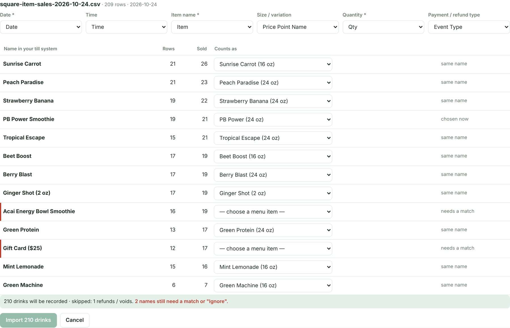
Two names still need a match. Refunds are skipped automatically.
Imported the wrong file? Under Import history, tap Undo: its sales are removed and the ingredients go back into stock.
c. Reorder
Open Procurement. Items at their reorder point are grouped by supplier with the number of packages needed to refill to par.
Adjust Packages if needed (e.g. a supplier minimum, or a slow week).
Tap Create purchase order for each supplier.
Place the order with the supplier as you normally do (phone, email, portal). The app records the order; it doesn't send it.
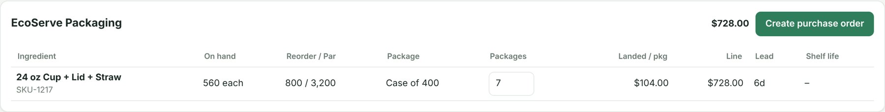
d. Keep an eye on deliveries
Staff check deliveries in on Receiving (Staff guide, section 7). Review the Receiving log for damage, shortages and late deliveries,
and follow up with suppliers. If an invoice shows a new price, enter it in the Invoice $/pkg column when receiving: the ingredient's
cost updates and the change appears under Cost changes on the Dashboard.
5Every week: schedule
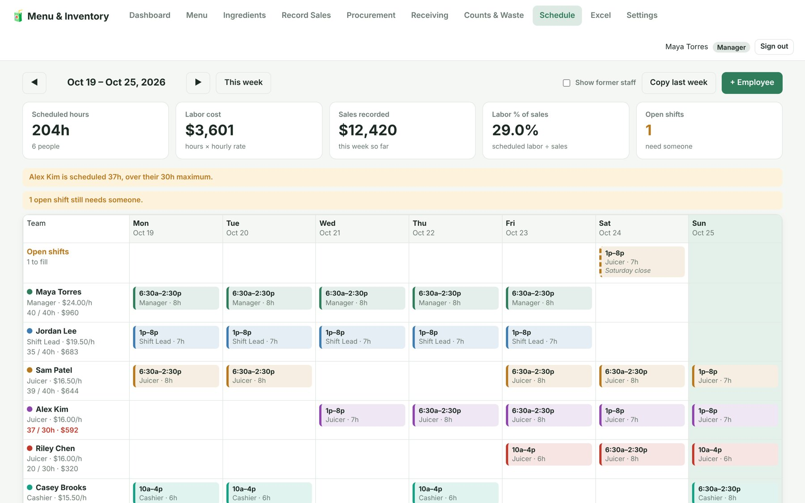
Warnings at the top: someone over their maximum hours, and an open shift.
Start next week: go to next week (▶) and tap Copy last week, then adjust.
Move a shift: drag it to another person or day. Hold Ctrl (or Alt/Option) while dropping to copy it.
Add a shift: click an empty spot; use the Open / Mid / Close buttons for common times.
Edit or delete: click the shift. On a phone or tablet, change the person or date here (dragging needs a mouse).
Fix the warnings: red outline = double-booked; red hours = over their maximum; Open shifts row = nobody assigned yet.
Watch labor: the bottom rows show labor cost and labor % of sales for each day.
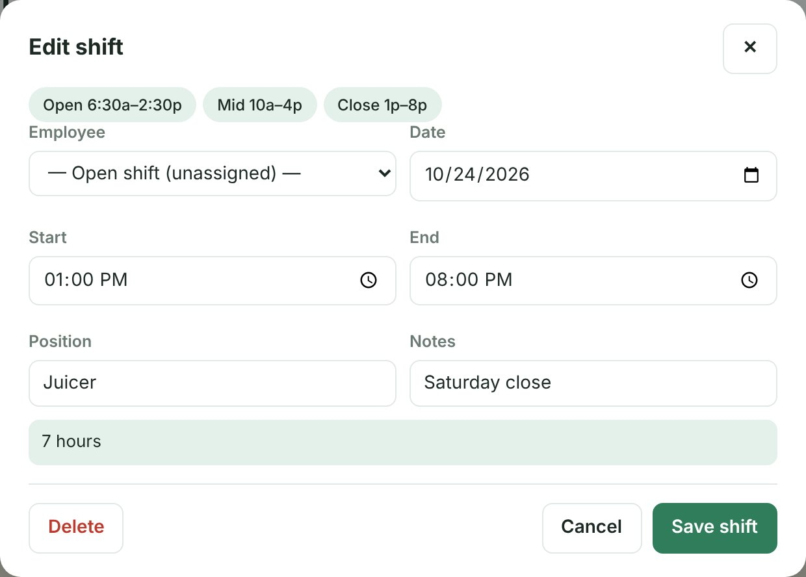
Assigning the open Saturday close.
Employees (people on the schedule) are not the same as users (sign-in accounts). Add someone with
+ Employee (name, role, hourly rate, maximum hours per week), then give them a user account on Settings if they need to sign in.
6Every week: counts, waste and costs
Stock count and variance
Have staff count the high-value items weekly (fruit, protein, nut butters, cups), at the same time each week, e.g. Sunday close.
Then open Counts & Waste → Variance report.
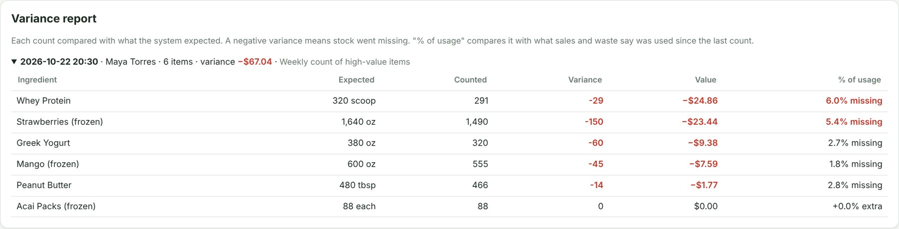
Each count compared with what sales and waste say should be there. "% missing" in red is above 5% of what was used.
If you see
Likely cause and what to do
Small shortfalls (under ~3%) across many items
Normal spillage and rounding. Keep counting; watch the trend.
One item consistently short
Over-portioning (check scoops and recipes with staff), unlogged waste, or theft. Remind staff to log waste.
An item over (positive)
A delivery received twice, sales counted twice (rung up and imported), or a counting error. Check the receiving log and imports.
Huge differences
Wrong unit: counted packages instead of oz/each. Recount; check the "1 pkg = …" line.
Waste
The Waste this week card totals waste by reason. Lots of expired / spoiled: order smaller amounts more often or lower the par level.
Lots of remade drink: retrain on the recipes involved. Check staff and free drinks against your policy.
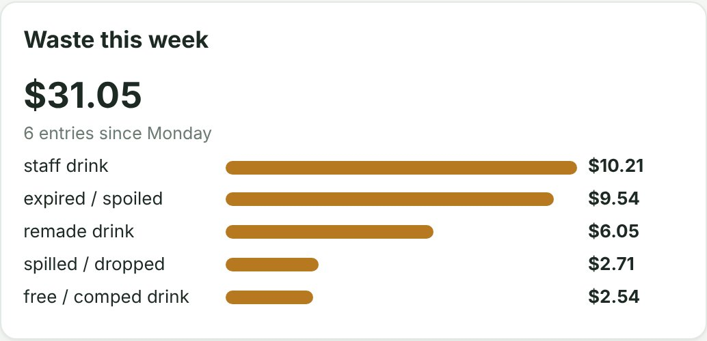
Ingredient cost changes
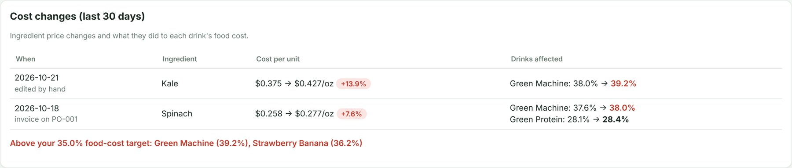
Kale went up 13.9%, pushing Green Machine to 39.2% food cost, above the 35% target.
Every ingredient price change (typed in, from an invoice, or from Excel) shows here with its effect on each drink. When a drink goes above the
target, consider a recipe tweak, a price rise or another supplier. The owner sets the target on Settings.
7Menu, ingredients and Excel
Add or change a drink
Menu → + New menu item, or click a drink to edit it.
Add a picture, name, price and description.
Click ingredients to add them (or type and press Enter); set amounts with − / +.
Check the box on the left: cost, margin, food-cost %, a price for your target, and the allergens.
Save item. Duplicate as new is the fastest way to make a size or flavour variation.
Add or change an ingredient
Ingredients → click a row (or + New ingredient). Keep these right, because every cost and reorder depends on them:
Quantity in package in the recipe unit, and Usable yield % for produce you trim or peel.
Package cost and shipping, lead time, minimum order.
Reorder point and par level (use the suggestion from recent usage).
Allergens: tick every one the ingredient contains. Drinks pick them up automatically.
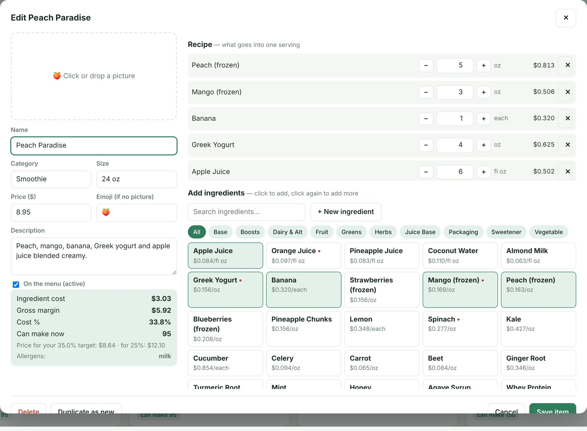
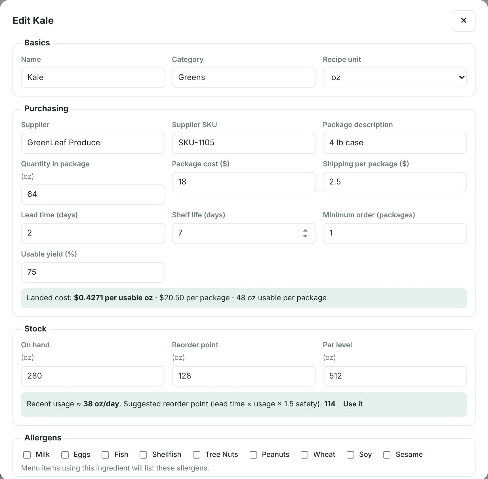
Kale: 64 oz per case but 75% usable, so it costs $0.43 per usable oz.
Excel
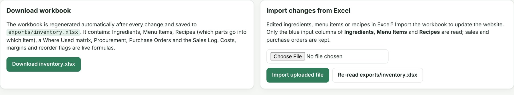
Download inventory.xlsx any time: it is rebuilt after every change with live formulas. You can edit ingredients, menu items and recipes in
Excel and import the file back. The import replaces ingredients, menu and recipes with what's in the file (a backup is saved first),
so always import the latest download, not an old copy.
8Training new staff
Create their account and link it to their employee record (section 2).
Give them the Staff guide; walk through signing in and choosing a password together.
On their first shift, show them: Record Sales (or tell them sales come from the till), allergens on Menu, logging waste, signing out.
Before they receive a delivery alone, do one together.
Before they count alone, show how to count in the unit shown ("1 pkg = …") and that blank means skipped.
After a week, give them the Staff knowledge check (pass mark 10 out of 12) and go over any wrong answers.
Manager checklist
Every day
Dashboard: reorder, out of stock, deliveries due
Import yesterday's sales from the till
Create purchase orders, then place them with suppliers
Check the receiving log for damage, shortages, delays
Every week
Copy and adjust next week's schedule; clear the warnings
Weekly count of high-value items; review the variance report
Review waste by reason
Review cost changes and drinks over target
Accounts
New starter: add user, link employee, temporary password in person
Forgotten password: Reset password → new temporary one
Leaver: Disable user, Remove from roster
Managers / owners / roles / backups: ask the owner
Fixing mistakes
Wrong waste: Waste log → Remove
Wrong import: Import history → Undo
Wrong sale, delivery or count: recount the affected items